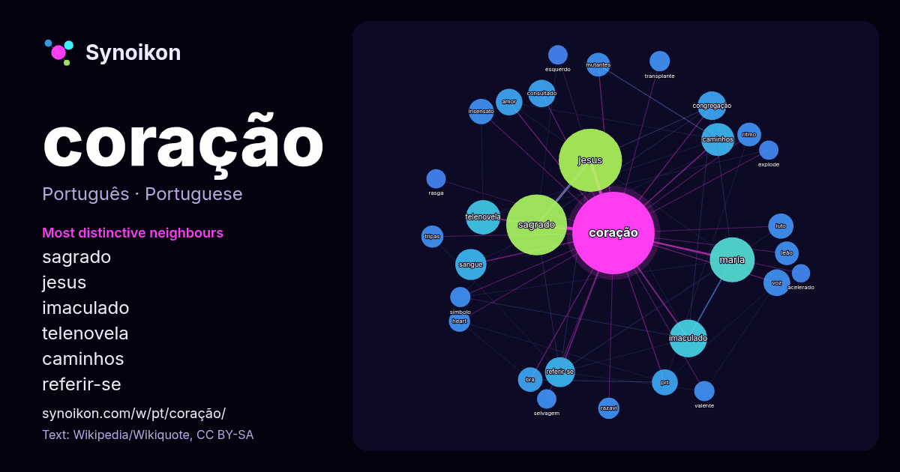

Português · palavra popular
coração
“heart” · As palavras encontradas ao seu redor em 1239 ocorrências da Wikipédia, Wikiquote.

Vizinhos mais característicos
- sagrado 90×
- jesus 68×
- imaculado 39×
- telenovela 27×
- caminhos 26×
- referir-se 23×
- consultado 21×
- maria 21×
- sangue 20×
- congregação 20×
- prt 19×
- insensato 18×
- luto 17×
- bra 16×
- mutantes 16×
- voz 14×
- tripas 14×
- ritmo 14×
- razavi 13×
- amor 12×
× = quantas vezes mais do que no texto geral da Wikipédia.
Vizinhos mais frequentes
- jesus 107
- sagrado 99
- maria 54
- filme 41
- imaculado 38
- telenovela 32
- álbum 30
- brasil 29
- caminhos 29
- igreja 28
- sangue 26
- canção 25
- referir-se 24
- brasileira 22
- congregação 22
- consultado 20
- amor 19
- portugal 19
- voz 19
- prt 18
Em contexto
- Nota: Para outros significados, veja Coração (desambiguação). O coração é um órgão muscular presente nos humanos e em outros animais que bombeia o sangue Wikipedia snippets · Coração
- coracao.html «Conheça as peruas de Insensato Coração» Redação Contigo! (2010). «Rita Fonseca - Quem é Quem - Insensato Coração». Contigo! Wikipedia snippets · Insensato Coração
- Haja Coração é uma telenovela brasileira produzida e exibida pela TV Globo de 31 de maio a 8 de novembro de 2016, em 138 capítulos. Substituiu Totalmente Wikipedia snippets · Haja Coração
- Coração Acelerado é uma telenovela brasileira produzida e exibida pela TV Globo de 12 de janeiro a 14 de agosto de 2026, em 177 capítulos. Substituiu Wikipedia snippets · Coração Acelerado
- telenovela. Para o samba-enredo, veja Peguei um Ita no Norte. Explode Coração é uma telenovela brasileira produzida e exibida pela TV Globo de 6 de novembro Wikipedia snippets · Explode Coração
- Coração de Mãe é uma telenovela portuguesa produzida pela Plural Entertainment e transmitida pela TVI desde 7 de setembro de 2026, substituindo Terra Wikipedia snippets · Coração de Mãe (telenovela)
- Coração Valente pode referir-se a: Coração Valente (álbum) — da banda de música cristã brasileira Voz da Verdade "Coração Valente" — canção do cantor Wikipedia snippets · Coração Valente
- Nota: Para o símbolo cristão, veja Imaculado Coração de Maria. Coração de Maria é um município brasileiro do estado da Bahia pertencente à Área de Expansão Wikipedia snippets · Coração de Maria
Mais palavras
- arte
- ciência
- clima
- comida
- cão
- deus
- dinheiro
- família
- força
- gato
- história
- língua
- morte
- natureza
- ouro
- ponte
- saúde
- trabalho
- trem
- verdade
- vida
- água
Pré-calculado em 2026-10-09 com as configurações padrão (±5 palavras, corpus médio). O mapa interativo pode atualizá-lo com dados ao vivo.
Interface traduzida automaticamente; correções são bem-vindas.